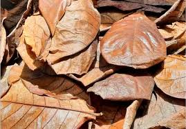

Sampah-sampah Organik
Daftar Jenis Sampah Organik Basah
Tekan tombol dibawah untuk mengarahkan anda ke halaman yang di inginkan
| No. | Jenis Sampah | Deskripsi |
|---|---|---|
| 1 | Sampah sisa makanan | Sampah yang berasal dari sisa makanan sehari-hari |
| 2 | Sampah Kulit buah | Sampah yang berasal dari kulit bekas memakan buah-buahan |
| 3 | Sampah Dedaunan | Sampah deadunan, yang biasanya kita temukan di sekitar kita |
| 4 | Sampah Kulit Sayur | Sampah yang yang berasal dari hasil mengupas kulit sayur |
| 5 | Sampah Ampas kopi dan teh | Sampah yang berasal dari ampas bekas meminum kopi maupun teh |
| 6 | Sampah Tulang | Sampah yang berasal dari tulang bekas memakan daging hewan maupun ikan |
| 7 | Sampah buah-buahan busuk | Sampah yang berasal dari sampah makanan busuk |
| 8 | Sampah biji-bijian | Sampah yang berasal dari jenis makanan biji-bijian |
| 9 | Sampah Kotoran | Sampah yang berasal dari Kotoran hewan maupun manusia |
Daftar Jenis Sampah Organik Kering
Tekan tombol dibawah untuk mengarahkan anda ke halaman yang di inginkan
| No. | Jenis Sampah | Deskripsi |
|---|---|---|
| 1 | Sampah Dedaunan kering | Sampah dedaunan yang kering dan berada disekitar kita |
| 2 | Sampah Kayu | Sampah Kayu yang berasal dari pohon |
| 3 | Sampah Cangkang Kacang | Sampah cangkang berasal dari sisa memakan kacang |
| 4 | Sampah Kertas | Sampah Kertas yang sering digunakan dalam kehidupan sehari-hari |
| 5 | Sampah Jerami atau Sekam Padi | Sampah sisa Jerami atau sekam padi |
| 6 | Sampah Batang Pisang | Sampah yang berasal dari sisa batang pisang di pohon pisang |
Yang tergolong
Yang tergolong sampah sisa makanan antara lain :
| No. | Jenis Sampah |
|---|---|
| 1 | Nasi |
| 2 | Sayuran |
| 3 | Daging |
| 4 | Ikan |
Yang tergolong
Yang tergolong sampah sisa kulit Buah antara lain :
| No. | Jenis Sampah |
|---|---|
| 1 | Kulit Apel |
| 2 | Kulit Pisang |
| 3 | Kulit Jeruk |
| 4 | Kulit Mangga, dan masih banyak lagi |
Yang tergolong
Berbagai jenis daun yang masih basah seperti
| No. | Jenis Sampah |
|---|---|
| 1 | Daun Pepaya |
| 2 | Daun Pisang, DLL |
Yang tergolong
Jenis sampah Kulit Sayur
| No. | Jenis Sampah |
|---|---|
| 1 | Kulit wortel |
| 2 | Kulit kentang |
| 3 | Kulit bawang (bawang merah, bawang putih) |
| 4 | Kulit timun |
| 5 | Kulit labu |
| 6 | Kulit tomat |
| 7 | Kulit ubi jalar |
| 8 | Kulit terong |
| 9 | Kulit lobak |
Yang tergolong
Yang tergolong sampah ampas adalah
| No. | Jenis Sampah |
|---|---|
| 1 | Ampas Kopi |
| 2 | Ampas Teh |
Yang tergolong
Berbagai jenis tulang seperti :
| No. | Jenis Sampah |
|---|---|
| 1 | Tulang ayam |
| 2 | Tulang sapi (seperti tulang iga) |
| 3 | Tulang kambing |
| 4 | dan masih banyak lagi |
Yang tergolong
Beragai macam buah yang busuk dan melewati masa makan nya seperti
| No. | Jenis Sampah |
|---|---|
| 1 | Buah Pisang yang busuk |
| 2 | Buah Apel yang busuk |
| 3 | Buah melon yang busuk |
| 4 | Buah semangka, Berry-berryan, dan masih banyak lagi |
Yang tergolong
Berbagai jenis Biji-bijian seperti
| No. | Jenis Sampah |
|---|---|
| 1 | Beras |
| 2 | Jagung |
| 3 | Oat |
| 4 | Kacang hijau |
| 5 | Kacang merah |
| 6 | Dan masih banyak lagi |
Yang tergolong
Berbagai jenis kotoran yang tergolong sampah organik adalah
| No. | Jenis Sampah |
|---|---|
| 1 | Kotoran sapi |
| 2 | Kotoran ayam |
| 3 | Kotoran kambing |
| 4 | Kotoran manusia |
| 5 | Dan kotoran mahluk hidup lainnya |
Yang tergolong
Yang tergolong sampah sisa dedaunan kering adalah berbagai jenis daun yang sudah kering, biasanya banyak ditemukan disekitar lapangan
Yang tergolong
Berbagai jenis sampah kayu adalah
| No. | Jenis Sampah |
|---|---|
| 1 | Potongan Kayu Sisa Pekerjaan Pertukangan |
| 2 | Ranting dan Dahan Kering |
| 3 | Serbuk Gergaji |
| 4 | Pallet Kayu Bekas |
| 5 | Kayu Furnitur Rusak |
| 6 | Kulit Kayu |
Yang tergolong
Cangkang/kulit kacang termasuk sampah kering, contohnya :
| No. | Jenis Sampah |
|---|---|
| 1 | Kulit kacang tanah |
| 2 | Kulit kacang |
| 3 | Dan lain-lain |
Yang tergolong
Kertas-kertas tergolong kedalam sampah organik kering :
| No. | Jenis Sampah |
|---|---|
| 1 | Koran bekas |
| 2 | Majalah dan brosur |